📻 Catorweb Broadcaster
Complete manual: how to use it, how to start a web radio and how to record a podcast.
A full radio studio on your Windows PC: music library, clockwheels, programming schedule, microphone, jingles, recording and live broadcasting to your streaming server.
1Welcome
Catorweb Broadcaster turns your computer into a radio studio. You pick the music, plan the schedule, talk on the microphone and send everything live on the internet, where listeners hear you with a player, an app or a website.
You use it in your browser (Edge, Chrome, Firefox): the pages look like a website, but they only run on your PC. A black window opens too: that is the actual program, the "engine" (it contains Liquidsoap, the audio software used by many professional stations).
What you need
| What | Notes |
|---|---|
| A PC with Windows 10 or 11 | An ordinary PC is fine. For broadcasting many hours in a row a dedicated, always-on PC is better. |
| Your music as MP3 | In one or more folders on the PC or on an external drive. |
| Internet connection | Broadcasting at 128 kbps needs 0.2 Mbit/s of upload; better have at least 1 stable. A network cable is more reliable than Wi-Fi. |
| A streaming server | Icecast, Shoutcast or a Liquidsoap input, usually rented from a provider (see Starting a web radio). Not needed to begin: with 🎧 Rehearse the radio plays on the PC. |
| Microphone and headphones | Optional. A USB microphone is the easiest way to start. |
- Library: all your tracks, split into categories (Blues, 70s, Jingle…).
- Clockwheel: the "recipe" telling the radio which categories to play and in which order, so it runs by itself.
- Scheduler: the programming schedule, i.e. which clockwheel to use at which time of day.
2Installing
- Download
Setup_CatorwebBroadcaster.exefrom github.com/…/releases/latest (it's free) and double-click the file. - Choose the setup language and follow the steps. No administrator rights are needed: the program installs for your user only.
- At the end you will find Catorweb Broadcaster on the Desktop and in the Start menu.
Updating: install the new Setup over the old one. Settings, library and recordings are kept.
Uninstalling: from Windows Apps. Your data (settings, database, recordings) is not deleted.
3First start and Settings
On the first start the Settings page opens. Later you find it with ⚙ Settings, on the right of the tabs: it opens in a separate window, so the radio and your headphone monitoring carry on. ← Back to the radio closes that window.
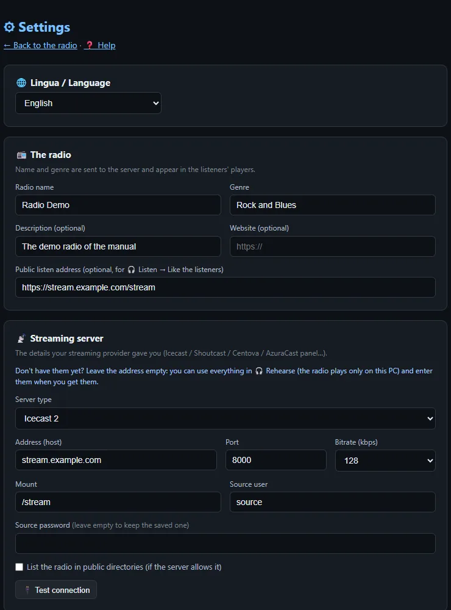
Language
Italiano or English: changes the whole interface. On the first start it follows Windows.
The radio
- Name and genre: shown in the listeners' players. The name is also used for recording files.
- Description and website: optional.
- Public listen address: the stream link listeners use (your provider gives it to you). It enables 🎧 Listen → Like the listeners, to hear yourself "from outside".
Streaming server
| Type | What to enter |
|---|---|
| Icecast 2 | Address (host), port, mount (e.g. /stream), user (usually source), password. |
| Shoutcast | Address and public port (the app connects to port + 1 by itself), password. For Shoutcast v2 with several streams: password:#1. |
| Liquidsoap (harbor) | Like Icecast; the mount is usually /. |
Bitrate: 128 kbps is the standard for music web radio (good quality, little bandwidth for listeners); 192 kbps if your audience mostly listens at home. 🔌 Test connection checks the details without going on air.
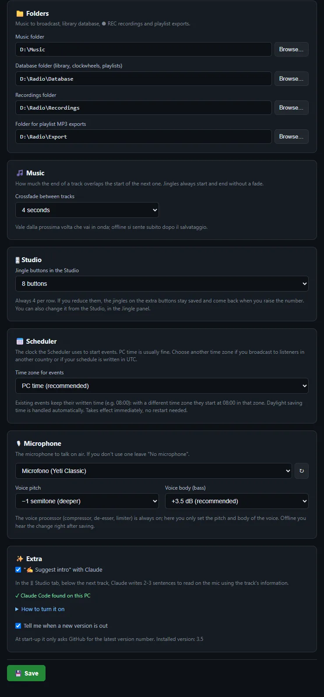
Folders
| Music | Where you keep your music (you can import from any folder anyway). |
| Database | Library, clockwheels and playlists. Put it in a folder you back up. |
| Recordings | Where the ⏺ REC MP3s go. |
| Export | Where Tools copies playlist MP3s. |
If you change a folder the program restarts by itself (not during a broadcast).
Microphone
Pick the microphone from the list (↻ refreshes it if you just plugged it in). Voice pitch (−2…+2 semitones) and Voice body (bass, +3.5 dB recommended) adjust the voice processor, which compresses, removes sibilance and limits peaks.
Extras
- Suggest intro with Claude: in the Studio Claude writes 2-3 sentences to read on the mic (see Studio). To turn it on:
- you need a Claude account with a Pro or Max plan;
- open PowerShell (Start menu → "PowerShell"), paste
irm https://claude.ai/install.ps1 | iexand press Enter; - type
claudeand press Enter: sign in with your Claude account in the browser and authorise, then type/exit; - close and reopen Catorweb Broadcaster: Settings shows "✓ Claude Code found".
4Your radio in 10 minutes
The shortest path to hearing your radio play, even without a server.
- Settings: station name, folders, the microphone if you have one. Save.
- Library → ⬆ Import → 📁 Folder: 📂 Browse…, pick a music folder, leave "create automatically" and press ⬇ Import. Repeat for 2-3 folders of different genres: each becomes a category.
- Clockwheel → + New: add slots, for example Jingle, Rock, Blues, Rock, Jingle, 70s. Save and press ⚡ Activate.
- At the top press 🎧 Rehearse, then 🎧 Listen → Everything to listen. The radio plays by itself!
- Open 🎛 Studio, turn on the microphone with the space bar and do your first link.
- When you have the server details: Settings → server → 🔌 Test connection, then ⚪ OFF AIR — Go on air.
5The screen
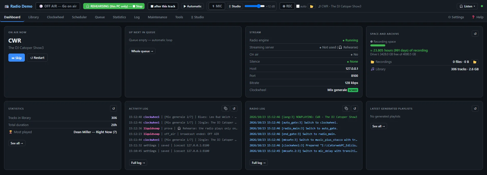
The top bar
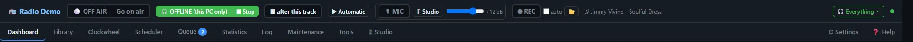
| Control | What it does |
|---|---|
| ⚪ OFF AIR — Go on air | Goes live (asks for confirmation). On air it becomes 🔴 ON AIR — End broadcast. |
| 🎧 Rehearse | The radio plays only on this PC, nothing is sent to the server. |
| ⏹ after this track | On air: ends the broadcast when the current track finishes. |
| ▶ Automatic / ✋ Manual | How tracks start: by themselves or only when you press START (see Studio). |
| 🎙 MIC box | Microphone, how the music ducks, voice volume. |
| ⏺ REC · auto · 📂 | Recording what goes on air. |
| 🎧 Listen ▾ | Headphone monitoring, three modes (see Listening). |
| Dot on the right | Green = the audio engine is running. |
Below are the tabs: Dashboard, Library, Clockwheel, Scheduler, Queue, Statistics, Log, Maintenance, Tools, 🎛 Studio. On the right ⚙ Settings (opens in a separate window) and ❓ Help (the quick guide inside the app).
📌 Reminders board
The round 📌 button at the bottom right opens a small board: type a note ("call Friday's guest", "renew the server on the 30th") and press Enter. ✓ marks it done (it gets struck through and moves to the bottom), ✎ edits it, 🗑 deletes it. The red number on the button shows how many reminders are still to do. Notes are saved in the database, even when you close the program.
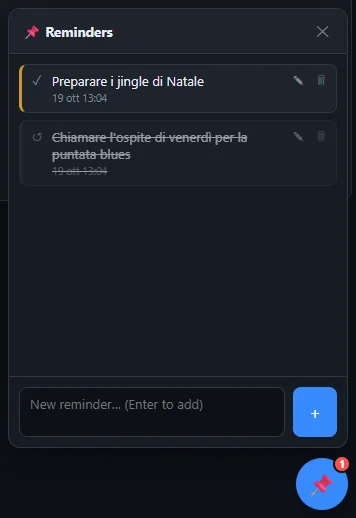
6Library and import
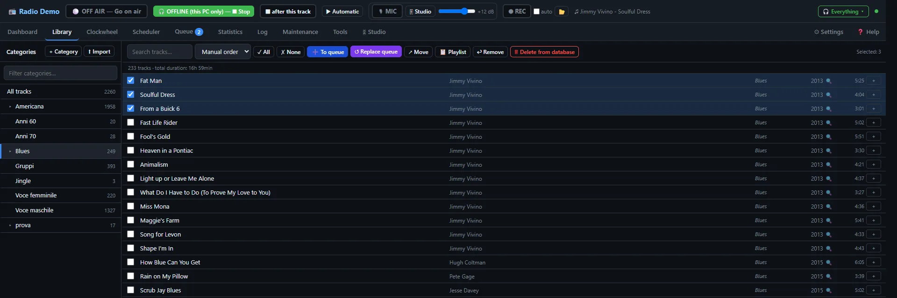
Categories are "virtual" folders: a track can be in several categories without duplicating the file.
- Search and sort (artist, title, genre, duration, year, date added, random, manual order by dragging).
- Select tracks with the checkboxes (or ✓ All), then: ➕ To queue adds them to the end of the queue, ↺ Replace queue clears the queue and puts the selected ones in it, ↗ Move copies or moves them to another category, ↩ Remove takes them out of the category (they stay in the library), 🗑 Delete from database removes them from the library, every category, the queue and the jingle buttons (the files stay on disk), 💾 Save M3U saves a playlist.
- + Cat creates a category. Hovering a category shows +sub subcategory, ✎ rename, ✕ delete (you can delete only the category, or also all its tracks from the database, even if they are in other categories; the files stay on disk). Drag tracks onto a category to copy them there.
- 📊 Stats: decades, genres and years of the category.
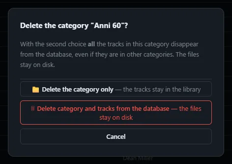
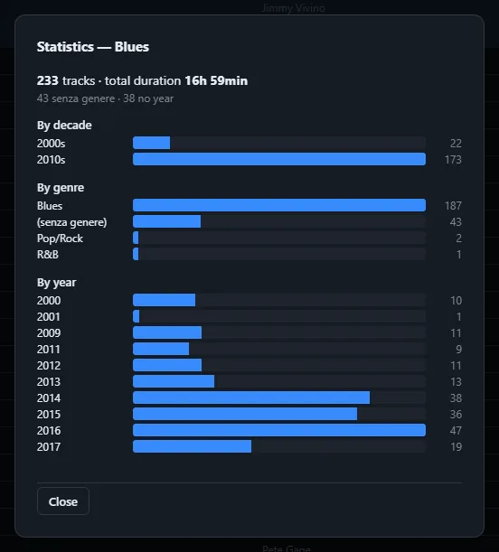
Importing
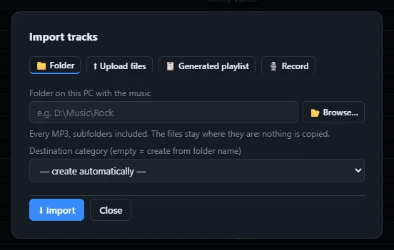
| Tab | What it does | Copies files? |
|---|---|---|
| 📁 Folder | Every MP3 in a folder and its subfolders, into a category (empty = named after the folder). | No, they stay where they are |
| 📋 Generated playlist | A playlist made by the app, or your own M3U (📂 Choose M3U file…). | No |
| ⬆ Upload files | Drag files in, e.g. from a USB stick. | Yes, into music\importati |
| 🎙️ Record | Record speech (voice track, intro, promo) with trim, bass/treble and compressor. | New file in music\registrazioni |
With more than 200 files the app asks for confirmation before importing: it's only a warning, you can import thousands of tracks.
8Jingles and special categories
The category name decides how its tracks go on air:
| If the name contains… | Tracks become | Effect |
|---|---|---|
| jingle, sweeper, liner, station id, imaging | Jingles | No fades and no crossfade: they start and end "dry", as they should. |
| intro, promo, news, spot, voice track | Intro, promo, news, spot, voice track | |
| any other name | Songs | Smooth crossfade between tracks. |
Jingles are never looked up online and have no track card. In the Studio you also have 8 jingle buttons to fire by hand (see Studio).
- Station ID (3-10 s): "You're listening to Radio Demo". The most important one: every 15-20 minutes.
- Sweeper (5-15 s): effect + line, between two songs.
- Sung jingle: the musical "logo" of the station.
- Show intros and promos for your regular shows.
9Queue and playlists
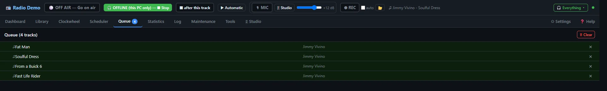
Tracks in the queue play before the clockwheel, in order. When the queue is empty the radio carries on with the active clockwheel. 🗑 Clear empties it, ✕ removes one track.
Saved playlists (M3U) are added to the queue from the Dashboard with ➕ Add or 🔁 Replace, or at a set time with the Scheduler.
10Clockwheel
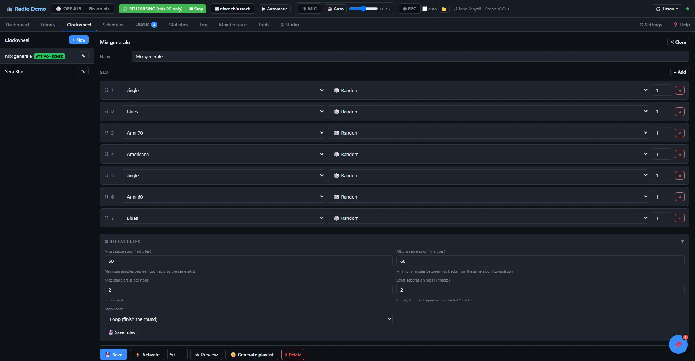
A clockwheel is a wheel of slots: each slot picks a track (or more) from a category. After the last slot it starts again from the first. It is your station's "format".
Slots
- Category to pick from.
- Mode: Random with rules, least recently played track, most recently played, least recently played artist…
- How many tracks per slot.
- Drag ⠿ to reorder, + Add for a new slot.
Repetition rules
| Artist separation (minutes) | Minimum time between two tracks by the same artist. 60 is a good start. |
| Album separation (minutes) | The same for albums and compilations. |
| Max same artist per hour | 0 = no limit. |
| Strict separation | Don't repeat a track among the last N. |
| Stop mode | For generated playlists: Loop (finish the round), Exact (exact length), Over (first overrun). |
The buttons
💾 Save · ⚡ Activate forces it now (it overrides the scheduler; a banner at the top reminds you, ✖ Release removes it) · 👁 Preview shows what would play, even before saving · 📀 Generate playlist builds a playlist of the chosen length (minutes).
- Station ID (Jingle category)
- "Power" song (your favourite category)
- Recent song
- "Gold" song (a classic)
- Sweeper (Jingle)
- Power song
- A song from another category for variety
11Scheduler and programming
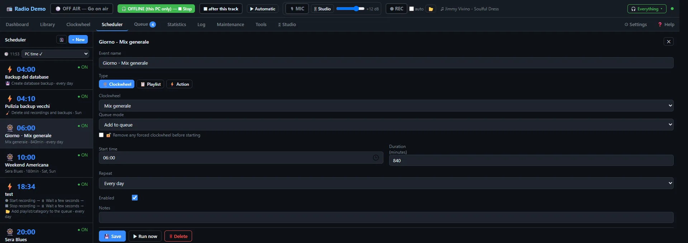
The Scheduler runs timed events (PC time). Each event has a name, start time, duration, repeat (every day, chosen days, once) and a type:
- Clockwheel: during that slot the radio uses that clockwheel. This is how you build your programming schedule.
- Playlist: adds to or replaces the queue with a playlist.
- Action: skip the track, clear the queue, queue a category or a track, move tracks between categories, change the default clockwheel, back up the database…
▶ Run now tests an event immediately. The 🗓 button shows the week's timeline:
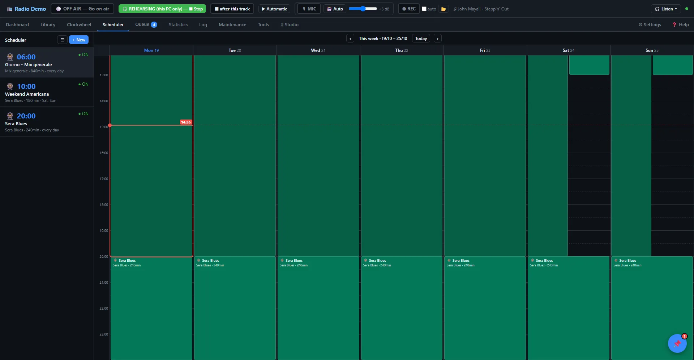
| 06:00–20:00 | "Day" clockwheel (varied music) |
| 20:00–24:00 | "Evening" clockwheel (a narrower genre) |
| Sat and Sun 10:00 | Special show (playlist or dedicated clockwheel) |
| 04:00 every day | "Back up the database" action |
12Going on air and 🎧 Rehearse
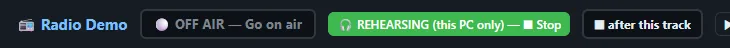
🎧 Rehearse: the radio on this PC only
Everything works (queue, clockwheel, jingles, microphone, studio) but nothing reaches the server. Listen with 🎧 Listen. Use it to:
- try a new clockwheel or show;
- warm up your voice and set the microphone;
- record a podcast (see Making a podcast);
- use the app before you have a server.
Pressing Go on air while rehearsing connects the server without stopping the music: the track you are hearing goes on air as it is.
Live
- Press ⚪ OFF AIR — Go on air and confirm.
- The button becomes 🟠 Connecting to server… and then 🔴 ON AIR.
- The broadcast starts with the first queued track or, if the queue is empty, from the clockwheel.
To stop: 🔴 ON AIR — End broadcast, or ⏹ after this track to end without cutting the song (it can be cancelled).
- Test connection succeeded (Settings).
- Queue or clockwheel ready; scheduler checked on the timeline.
- Right microphone, voice volume tried while rehearsing.
- Headphones plugged into the PC (not the USB mic) on 🎧 Listen → Music only.
- ⏺ REC "auto" on if you want an archive of the show.
- Windows notifications and heavy programs closed.
While Catorweb Broadcaster is open Windows doesn't go to sleep (but closing a laptop lid still does).
13🎛 Studio
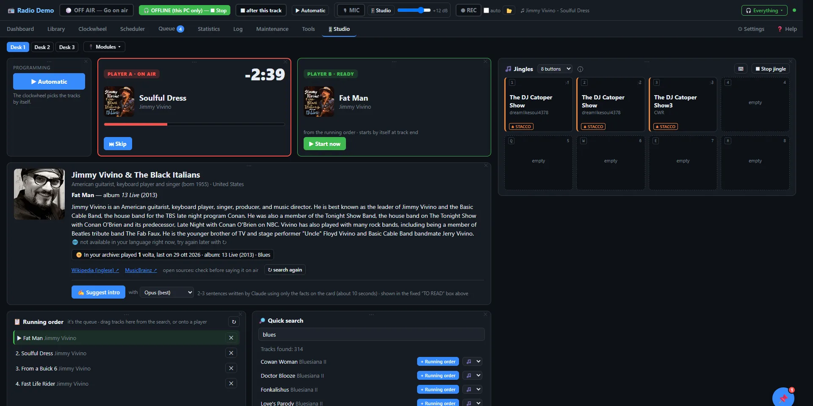
This is the tab for presenting. At the top, the big countdown to the end of the track (the bar turns orange in the last 30 seconds and flashing red in the last 10) and the NEXT strip.
▶ Automatic and ✋ Manual
- Automatic: queue + clockwheel, everything starts by itself.
- Manual: when the current track ends the radio stops and waits for ▶ START. Pressing START while a track plays jumps to the next one. It lets you talk as long as you like between tracks.
"End broadcast" always switches back to Automatic for next time.
Running order and quick search
The running order is the queue: search a track on the right, + Running order adds it, ✕ removes it.
Track card
Below NEXT appears the card of the next track: artist photo and biography (Wikipedia), album and year (MusicBrainz, iTunes), how many times you've played it and when. Needs internet; cards are kept for 30 days, ↻ search again refreshes them.
✍ Suggest intro (optional)
If Claude Code is installed on the PC and signed in to your account, Claude writes 2-3 sentences to read on the mic using only the facts on the card. Choose Opus (writes better) or Sonnet (uses less). The text appears in the 🎙 TO READ box.
Jingle buttons
8 buttons: assign them from search with 🎵, one click plays them, ⏹ Stop jingle stops them. They work in Automatic too. Each button has its own mode (click the label at the bottom):
| ≋ OVER | The jingle plays over the music, which ducks. For short effects, applause, laughs. |
| ⏏ BREAK | The music fades in ~1 s and the jingle plays alone; then in Automatic the next track starts, in Manual silence until START. |
14🎙 Microphone
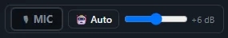
- 🎙 MIC: click = on/off (red = on).
- Hold the space bar: you're live while you hold it (not while typing in a field).
- Slider: voice volume on air, from −6 to +18 dB.
🤖 Auto or 🎚 Studio: when the music ducks
| Mode | How it works | For whom |
|---|---|---|
| 🤖 Auto (default) | The music ducks only while you actually speak and comes back ~1 s after your last word. The mic can stay on. | People who talk over music a lot, interviews. |
| 🎚 Studio | Hold the space bar: the music drops straight away and comes back when you let go, like a mixer fader. | People who want to decide every link. |
- A USB dynamic microphone picks up less room noise than a condenser one.
- Mouth 10-15 cm away, slightly off-axis; a pop filter avoids explosive "p"s.
- A room with curtains, rugs, books: less echo. Avoid empty rooms and bathrooms.
- Set the volume while rehearsing: the voice should sit a little above the music, not blast.
- Voice pitch and body in Settings: change a little at a time and listen back to a recording.
15⏺ Recording
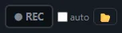
- ⏺ REC: click = start (red, with the time), click = stop. Works on air and while rehearsing.
- auto: records every broadcast by itself, from "Go on air" to "End broadcast" (while rehearsing it only starts by hand).
- 📂 opens the recordings folder.
Each recording creates two MP3s:
StationName_YYYY-MM-DD_hh-mm-ss.mp3 | Exactly what goes on air (music + voice), 192 kbps, about 85 MB per hour. |
…_voce.mp3 | Your voice only: very useful for editing a podcast. |
On the Dashboard the Space and archive panel shows how many hours of recording still fit on the disk (about 144 MB per hour, voice file included), and how much the recordings and the library take up. Under 24 hours it turns orange, under 3 red; if you are recording a warning also appears at the top.
16Headphone monitoring
The 🎧 Listen ▾ button at the top opens a menu with the three ways of listening, each explained. One plays at a time and the button shows which one is on.
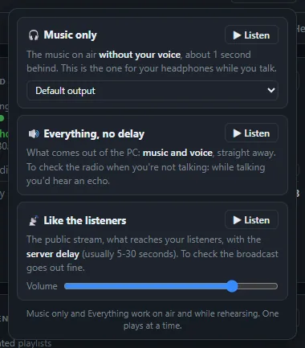
| 🎧 Listen → | What you hear | When to use it |
|---|---|---|
| 🔊 Everything, no delay | What the PC outputs (music + voice), no delay. | Checking the radio. Not while talking: you'd hear an echo. |
| 🎧 Music only + output | Music only, without your voice, ~1 s delay. | In your headphones while presenting. Choose the output of the headphones plugged into the PC. |
| 📡 Like the listeners | The public stream, with the server's delay (5-30 s). | Checking what listeners hear. Works if Settings has a public listen address. |
17Statistics, Maintenance, Tools
Statistics
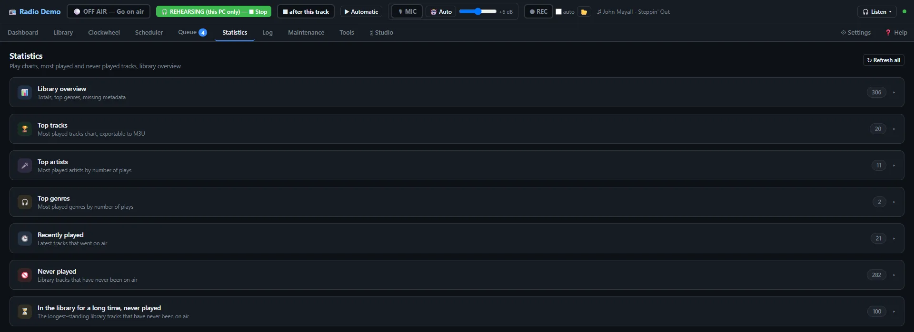
Library overview, top tracks (exportable as M3U, also as a countdown for a chart show), top artists and genres, recently played, never played, "in the database for a long time but never played" (perfect for rediscovering forgotten tracks).
Maintenance
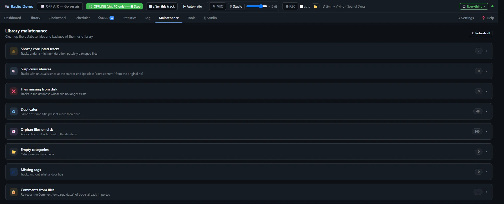
- Short / corrupted tracks and suspicious silence at the start or end of files.
- Missing files (in the database but no longer on disk) and orphan files (on disk but not in the database).
- Duplicates (same artist and title), empty categories, missing tags (with artist/title guessed from the file name).
- Backup & Restore of the database.
Tools
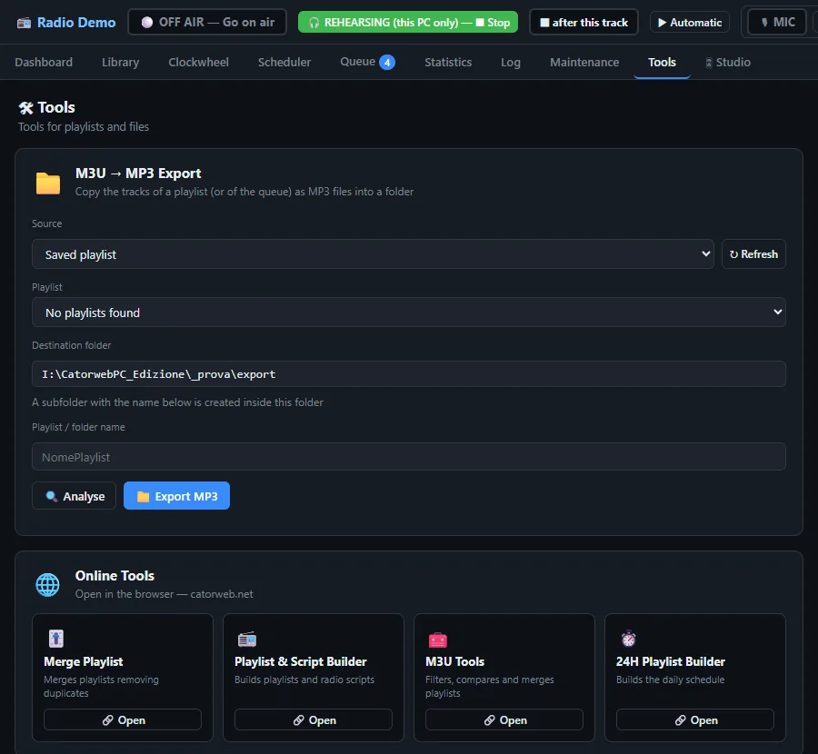
M3U → MP3 Export copies the tracks of a playlist or of the queue into a folder (for a USB stick, a DJ set, a backup). Online Tools opens playlist tools on catorweb.net.
The Log tab shows what happens in the app and in the audio engine; 📋 Copy to send it to whoever is helping you.
18Data, backups, updates
%APPDATA%\CatorwebPC\config.json | Settings |
%APPDATA%\CatorwebPC\data\ | Logs, state, schedule, automatic backups |
| Database folder (Settings) | Library, clockwheels, playlists |
| Recordings folder | The REC MP3s |
To open %APPDATA% paste it into the File Explorer address bar.
- In the Scheduler, a "Back up the database" action every night.
- Every now and then copy the Database folder and
%APPDATA%\CatorwebPCto an external drive or the cloud. - Before big cleanups in Maintenance: Backup & Restore → Create backup.
The program uses ports 8767, 8001 and 1235 only inside the PC: nothing needs opening on the router.
Updates, licenses and source code
New versions are published on GitHub: download the Setup and install it over the old one. Catorweb Broadcaster is free software (GNU GPL version 2 or later): the source code is at github.com/luigiceletti-hue/catorweb-broadcaster. In the program folder, under licenze, you'll find the components it uses (Liquidsoap, FFmpeg, mutagen, Python…) with their licenses.
19Troubleshooting
It won't go on air / stays "Not connected"
Settings → 🔌 Test connection: the message tells you why (wrong address or port, password or mount refused, server down). With Shoutcast use the public port. Check the Log tab too.
The music stays low with the mic on
You're in 🎚 Studio mode and turned the mic on with 🎙 MIC: in Studio mode you talk holding the space bar. To leave the mic on, switch to 🤖 Auto.
The microphone can't be heard
Check in Settings that the right one is selected (↻ refreshes the list). It only works on air or while rehearsing.
I hear myself with an echo
You're listening on 🎧 Listen → Everything while talking: use Music only.
"SILENCE DETECTED"
No audio has gone on air for more than 20 seconds. The engine restarts by itself; if it persists, end and restart the broadcast. In Manual, silence between tracks is normal.
A track won't play / "File not found"
The file was moved or renamed: Maintenance → Files missing from disk.
"Catorweb Broadcaster is already open"
The program is already running: use the open window, or close it and reopen the icon.
The track card is empty
It needs internet and the artist in the tags.
20Guide: starting a web radio
1. The idea
Before the technology comes the format: what music, for whom, in which tone. An "a bit of everything" station is hard to promote; a station with a clear identity (blues and roots, 70s Italian rock, emerging indie…) is remembered and recommended.
- Choose a short name, easy to say and spell; check that the domain and social handles are free.
- Write who you are in one line: "The blues station, from the roots to today".
2. Music rights
3. The streaming server
Your PC sends one stream to the server; the server multiplies it for all listeners. You rent it from a provider (search "Shoutcast hosting" or "Icecast hosting"):
- Concurrent listeners (slots): 25-100 are enough to start.
- Bitrate: 128 kbps MP3 is fine.
- Almost all include a control panel (Centova, AzuraCast, Everest…) with statistics and the listen link.
- They'll give you: address, port, mount (Icecast), password. These go into Settings.
4. Getting found
- A website or page with a player (providers often give you a ready one).
- List your station in directories: TuneIn, Radio.net, Radio Garden, Streema, online radio apps… More directories = more casual listeners.
- Social media: announce live shows, post clips, ask for requests.
5. Sound and identity
- Imaging: station ID every 15-20 minutes, sweepers between tracks, jingles for shows (see Jingles).
- Clean tags: correct title and artist show up in listeners' players.
- Track levels are evened out automatically, but avoid very low-quality files (under 128 kbps).
6. Programming
- Start with 2-3 clockwheels (day, evening, weekend) and a simple schedule.
- Add regular appointments: the same show, same day, same time. Listeners come back out of habit.
- One live show a week does more than ten hours of music only.
7. Broadcasting 24/7
- A dedicated PC, with a network cable and maybe a small UPS.
- Set Windows Update active hours, so it doesn't restart the PC while you broadcast.
- Check Maintenance (missing files, duplicates) and Statistics (never played) now and then.
21Guide: making a podcast
Catorweb Broadcaster is perfect for "radio-style" podcasts: voice, music and jingles in a single recording, like a real show.
The recipe
- Prepare the running order in the Studio (queue) and set ✋ Manual, so you decide when each track starts.
- Press 🎧 Rehearse: nothing goes on the internet.
- Press ⏺ REC.
- Present: theme tune (jingle on BREAK), intro, tracks with ▶ START, links with the space bar.
- Stop ⏺ REC. With 📂 you'll find two files: the full episode and the voice only.
Editing (optional)
To cut a mistake use a free editor like Audacity. The _voce.mp3 file lets you fix the speech separately from the music. For headphones and car listening aim for an average loudness of about −16 LUFS (the Apple Podcasts and Spotify standard); Audacity has "Loudness Normalization".
Where to publish
| Episode type | Where |
|---|---|
| With commercial music | Mixcloud: it has agreements with rights societies for music shows. Main rules (check the current ones): add the tracklist with times, not too many tracks by the same artist or album in one show, no downloads for listeners. |
| Speech only, or free / your own music | A podcast hosting service (Spreaker, RSS.com, Spotify for Creators…): it creates the RSS feed and distributes it to Spotify, Apple Podcasts, Amazon Music, YouTube. |
Episode tips
- Fixed structure: theme → hello and topic → blocks (2-3 tracks + a link) → goodbye and next episode.
- Consistent length and a regular release (same day every week).
- A square cover (3000×3000 px) readable even when small.
- Titles that say what's inside: "Chicago blues: from Muddy Waters to today" beats "Episode 12".
- Before recording, a one-minute REC test to check voice and levels.
22Getting the most out of the app
📚 Library
- Organise categories by on-air role (power, recent, gold, late night) rather than by folder.
- Tidy genres with "Apply the genre to the whole album".
- Use embargo for future releases.
- Once a month: Maintenance → Files missing from disk and Duplicates.
🎡 Clockwheel
- Large categories more often, small ones less.
- 60-minute artist separation as a base.
- Always try with 👁 Preview or while rehearsing.
- A jingle every 3-4 tracks keeps the identity.
🎛 Live
- Watch the countdown: talk over intros and endings, not mid-song.
- Prepare the running order first, with quick search.
- ✋ Manual for talk shows, ▶ Automatic for the rest.
- ⏹ after this track for a graceful ending.
🛡 Safety
- Nightly backup with the Scheduler.
- Before changing everything: Create backup.
- Don't close the black window while on air.
- Glance at the Log tab now and then.
23Glossary
| Bitrate | Amount of data per second in the stream (kbps): higher = better quality and more bandwidth. |
| Clockwheel | Sequence of slots deciding the order of categories on air. |
| Crossfade | Overlapping fade between the end of a track and the start of the next. |
| Ducking | Automatic lowering of the music when you talk. |
| Embargo | Blocking a track until a date. |
| Icecast / Shoutcast | The two most common kinds of streaming server. |
| Imaging | The set of jingles, station IDs and sweepers that give the station its identity. |
| LUFS | Unit of perceived loudness, used for podcasts and streaming. |
| Mount | The "name" of the stream on an Icecast server (e.g. /stream). |
| Programming schedule | The plan for the day/week: what goes on air and when. |
| Rehearse | The radio runs only on the PC, without broadcasting. |
| Slot | One position in the clockwheel: a category and how many tracks to take. |
| Station ID | Short identification: "You're listening to…". |
| Sweeper | Short effect with voice between two tracks. |
| Voice track | A spoken link recorded in advance and placed in the running order. |
Catorweb Broadcaster · manual for version 2.11. The quick guide is also inside the app: ❓ Help.